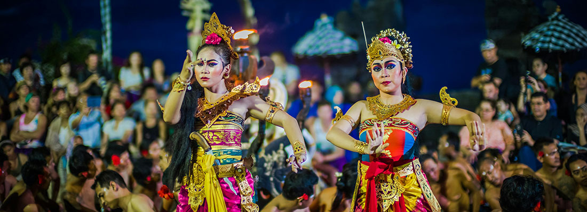

BALI INDONESIA
まだ知らない、“楽園の奥行き”へ
バリの魅力について
神々が宿る島 – 豊かな文化とスピリチュアルな世界
インドネシアに浮かぶバリ島は、美しい海と緑豊かなライステラス、街角に漂うお香の香りや祈りの風景など、訪れる人の五感を優しく包み込むような魅力にあふれた場所です。
朝は透き通るような海でのんびり過ごし、昼は活気ある市場やカフェを巡り、夕暮れには寺院に沈む神秘的な夕日を眺める──そんな豊かな時間が、日常の忙しさを忘れさせてくれます。
人々は誰に対しても温かく、微笑みを絶やさないその姿に、どこか懐かしい安心感を覚えるでしょう。
ローカルな屋台の料理から洗練されたリゾートダイニングまで、食の楽しみも尽きず、物価も比較的手頃なため、気軽にラグジュアリーな体験ができるのも大きな魅力です。
バリはただの観光地ではなく、そこに滞在することで心が整い、自分自身を見つめ直すことができる、特別な“時間”が流れる島なのです。

おすすめのスポット
バリの人気スポットをご紹介
ウブドのライステラス

バリ島中部に位置するウブドは、自然と芸術が融合した癒しのエリア。
中でもテガラランのライステラスは、緑の棚田が幾重にも連なる絶景スポットとして知られています。
朝靄の中で見る風景はとても幻想的で、静かな時間の中をゆっくり散策すれば、心まで穏やかになるような体験ができます。
周辺にはカフェやスイング（ブランコ）もあり、フォトジェニックなひとときを過ごせます。
ランプヤン寺院（天空の門）

バリ東部にあるランプヤン寺院は、近年SNSでも話題となった“天空の門”で有名な寺院です。
荘厳な石門の間から望むアグン山と空のコントラストは圧巻で、神秘的な雰囲気に包まれたバリならではの体験が味わえます。
早朝の時間帯が比較的空いており、澄んだ空気の中で静かに祈りを捧げる人々の姿が印象的です。
ヌサペニダ島

バリ本島からスピードボートで約40分。ヌサペニダ島は、壮大な自然と美しいビーチが魅力の離島です。
断崖に囲まれた「クリンキンビーチ」や「ブロークンビーチ」、海の中で巨大なマンタと泳げるシュノーケリング体験など、大自然の迫力を肌で感じることができます。
観光地化されすぎていない素朴な雰囲気も、この島ならではの魅力です。